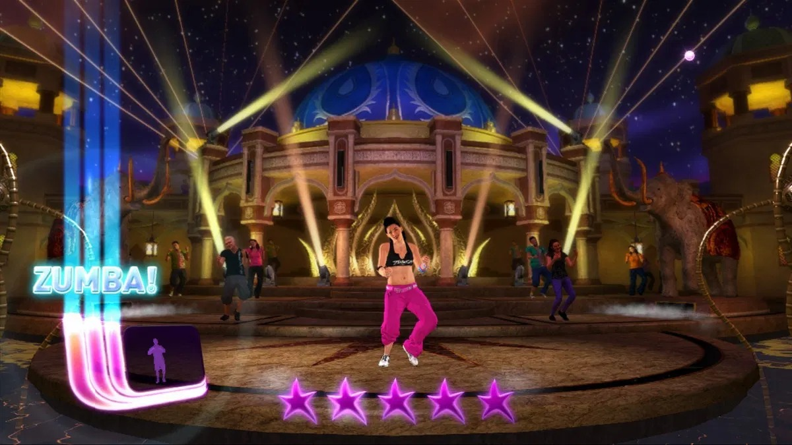

Resumen ejecutivo
El proyecto se presenta en una página clara: pitch, alcance, sistema técnico y validación en una sola lectura.
Versión estructurada tipo GDD para revisar el contexto de gimnasio, la interacción corporal, el sistema técnico y la validación de Kinect Yoga Experience.
Kinect Yoga Experience es una estación interactiva de bienestar y movimiento guiado para gimnasios. Este GDD resume cómo el proyecto usa Kinect 360 y Unity para convertir rutinas breves de yoga en una experiencia corporal sin controles físicos, con calibración, progreso visual y una base escalable hacia otros módulos fitness.
El proyecto se presenta en una página clara: pitch, alcance, sistema técnico y validación en una sola lectura.
Seleccionar, calibrar, observar, ejecutar, recibir feedback y avanzar: el ciclo central del prototipo queda explícito.
La página no solo presenta la idea: también muestra KPIs, pruebas y límites reales del alcance actual.
La página reúne la información esencial del proyecto: identidad, contexto de gimnasio, pitch, propuesta de valor y estado actual del prototipo.
Kinect Yoga Experience
Aplicación interactiva con reconocimiento corporal.
Kinect 360 como sensor de entrada y Unity como motor de desarrollo.
PC con Windows y sensor Kinect 360.
Matias Alexander Cabrera Navas y Listher Gabriel Vera Vera.
Diseño y Desarrollo de Experiencias Digitales / RV y videojuegos. Versión 0.1 del proyecto.
Estación interactiva de bienestar y movimiento guiado para gimnasios con Kinect 360.
Usuarios de gimnasio y espacios fitness que buscan rutinas breves, guiadas y apoyadas por tecnología interactiva.
Convertir el cuerpo en la interfaz principal para ofrecer una estación autónoma de exergame con calibración y feedback visual.
Prototipo base en construcción, orientado a validar reconocimiento corporal, claridad visual y tiempos de respuesta.

La experiencia busca que el usuario se sienta acompañado por una guía digital clara, tranquila y fácil de seguir. El reto no es competir, sino comprender la postura, ejecutarla frente al Kinect y recibir una respuesta visual que indique si el sistema reconoce el cuerpo de forma adecuada.
Frase resumen: practicar yoga usando el cuerpo como interfaz principal, con una guía visual que responde al movimiento del usuario.
Imitar una postura guía, mantener el equilibrio y ubicarse correctamente frente al sensor Kinect.
Feedback visual, avance de rutina y confirmación de que el reconocimiento corporal funciona de forma estable.
El usuario ejecuta la postura, Kinect captura el cuerpo y la interfaz comunica el estado de la ejecución.
El loop debe ser simple, repetible y fácil de comprender. Cada vuelta permite ejecutar una postura, recibir feedback y decidir si el usuario corrige o avanza.
El usuario siempre entiende qué sigue: calibrar, observar, ejecutar, recibir feedback y continuar.
La misma estructura permite probar varias posturas con una base de interacción constante.
El loop hace visibles los puntos de fallo: tracking, selección por gesto, comprensión y tiempo de respuesta.
La prioridad actual es validar si la interacción corporal, la guía visual y el reconocimiento básico de posturas funcionan de manera comprensible y técnicamente viable.
Comprobar que el prototipo se entiende, responde y guía de forma suficiente para una primera validación funcional.
Evitar prometer más de lo que el prototipo puede demostrar en esta fase de construcción.
Una base funcional y medible que permita iterar la interfaz y el reconocimiento antes de escalar el sistema.
El input principal no es teclado, mouse ni mando. Kinect 360 capta el cuerpo del usuario y Unity interpreta esa información para activar respuestas visuales y navegación por gesto.
Observar la postura guía, ubicarse frente al sensor, seleccionar opciones con la mano, ejecutar posturas básicas, mantenerlas y corregir su posición según el feedback.
Detectar el cuerpo, validar encuadre, reconocer partes principales, mostrar la postura actual, indicar progreso y alertar si el tracking pierde estabilidad.
Usuario detectado, postura entendible visualmente, rango correcto frente al sensor y feedback suficientemente claro para avanzar.
Usuario fuera del encuadre, pérdida de tracking, postura no reconocida o mensajes visuales demasiado ambiguos para corregir.
Movimiento corporal detectado por Kinect 360.
Selección por gesto, manteniendo la mano sobre una opción.
Calibración corporal estable antes de iniciar la rutina.
Tracking estable, selección confirmada, barra de progreso, mensajes de corrección y postura reconocida.
Mantener la mano sobre una opción, ubicarse en el marco de calibración y ejecutar la postura indicada.
La secuencia de pantallas del prototipo muestra cómo se traducen estas decisiones a la UI/UX real.
La propuesta visual plantea una atmósfera digital inmersiva, limpia y de alto contraste inspirada en escáneres topográficos y pantallas HUD tecnológicas.
Color de fondo principal de la interfaz. Aporta profundidad, silencio visual y permite que los acentos cálidos respiren sin ruido.
Acento principal de la interfaz para títulos, marcos, estados destacados y focos visuales que orientan al usuario.
Superficie clara para tarjetas, paneles y bloques de lectura. Suaviza el contraste y hace que el contenido se sienta más calmado.
Color de énfasis para respuestas del sistema, llamadas de atención suaves y momentos donde la interfaz necesita marcar acción.
Color de soporte para progreso, estados tranquilos y señales de acompañamiento, reforzando la sensación de yoga y equilibrio.
El prototipo se organiza en cinco pantallas principales para que la interacción por gesto siga siendo clara cuando el usuario está en movimiento.
Permite acceder a Yoga, Calibración y Créditos mediante selección por gesto sostenido.
Presenta rutas organizadas por respiración, equilibrio, flexibilidad y control postural.
Muestra cámara Kinect, postura actual, tiempo, progreso y siguiente movimiento.
Verifica encuadre, distancia, alineación corporal y estabilidad del tracking antes de empezar.
Presenta al equipo responsable y cierra el recorrido visual del prototipo.
Botones por gesto, barra de progreso, temporizador, marco de calibración y mensajes de éxito o corrección.
El sistema se construye con Kinect 360 y Unity. La cadena técnica va desde la detección corporal hasta la retroalimentación visual, y la validación se apoya en eventos y métricas claras.
Ejecuta la postura, decide la corrección y completa la rutina guiada.
Sensor de entrada encargado de capturar el movimiento corporal del usuario.
Traduce la presencia y posición del cuerpo en datos utilizables por la lógica del sistema.
Motor responsable de procesar información, interfaz y flujo del prototipo.
Decide si la postura es válida, si el tracking es estable y qué feedback debe mostrarse.
Comunica postura actual, progreso, corrección, espera y confirmación de éxito.
Inicio de sesión, usuario detectado, calibración completada, postura iniciada, postura reconocida, fallo de tracking y rutina finalizada.
Tiempo de calibración, tiempo de respuesta, porcentaje de posturas reconocidas, errores de tracking y pérdida de detección corporal.
Claridad de instrucciones, facilidad para seleccionar opciones, comprensión de la postura guía, utilidad del feedback y tasa de finalización.
El prototipo está dirigido tanto a personas interesadas en bienestar físico guiado como a estudiantes e investigadores que analizan interfaces corporales y seguimiento de movimiento.

Personas interesadas en bienestar físico, yoga básico y rutinas guiadas sin controles físicos ni presión competitiva.

Estudiantes, investigadores y desarrolladores interesados en interfaces corporales, seguimiento de movimiento y experiencias tecnológicas accesibles.
Instrucciones claras, movimientos fáciles de seguir, retroalimentación visible, interfaz simple y una experiencia guiada sin fricción innecesaria.
La propuesta contempla tres perfiles para evaluar claridad, accesibilidad y proyección futura del prototipo.
Busca una actividad guiada, accesible y sin presión competitiva. Valora instrucciones claras y una rutina fácil de integrar a su día.
Se interesa por experiencias innovadoras y espera que el cuerpo funcione como entrada principal de manera comprensible y estable.
Representa una posible expansión futura. No forma parte de la validación principal actual, pero orienta la escalabilidad del sistema.
Estas referencias no funcionan como copia ni como competencia directa. Sirven para explicar qué elementos inspiran el proyecto y dónde se ubica Kinect Yoga Experience dentro de esa conversación.

Referencia por su guía visual y por la relación entre cuerpo e interfaz, aunque su objetivo principal sea el entretenimiento.

Aporta la lógica de rutina guiada y movimiento continuo, pero con menor foco en precisión postural y calma.
La propuesta toma ideas del ejercicio guiado y de la captura corporal, pero las orienta a la validación de una experiencia de yoga acompañada por feedback visual.
Sirve como referencia por su organización paso a paso, pero no interpreta la postura del usuario en tiempo real.
Inspira el foco en respiración, equilibrio, postura y calma, que son la base experiencial de esta primera fase.
El valor del proyecto no es solo mostrar ejercicios, sino reconocer la ejecución corporal y responder visualmente al usuario.
No aplica en la versión actual. La experiencia se plantea como individual para validar primero reconocimiento corporal, calibración, claridad de interfaz y retroalimentación visual.
No aplica como eje principal en esta fase. El proyecto sigue centrado en construir y validar la experiencia base antes de explorar una salida comercial.
La organización de esta página se apoya en referentes de estructura, criterios de validación e interfaz ya definidos para el proyecto.
Sirve como base del orden narrativo de la página y de la jerarquía principal del contenido.
Complementa la organización de métricas, analítica y plan de pruebas del prototipo.
La web resume y presenta; la interfaz Kinect muestra cómo se traduce esa lógica a pantallas reales.
Ver interfaz KinectEl objetivo general es comprobar si el usuario puede iniciar una rutina, calibrarse correctamente, seguir una postura guía y recibir retroalimentación visual comprensible sin depender de controles físicos.
El proyecto sigue en construcción del prototipo base. Las iteraciones esperadas se concentran en mejorar distancia frente al Kinect, mensajes visuales, contraste, simplificación de posturas y tiempos de respuesta.
Base de referencia: criterios de estructura, validación y las páginas actuales del proyecto.
Revisar pantallas del prototipo